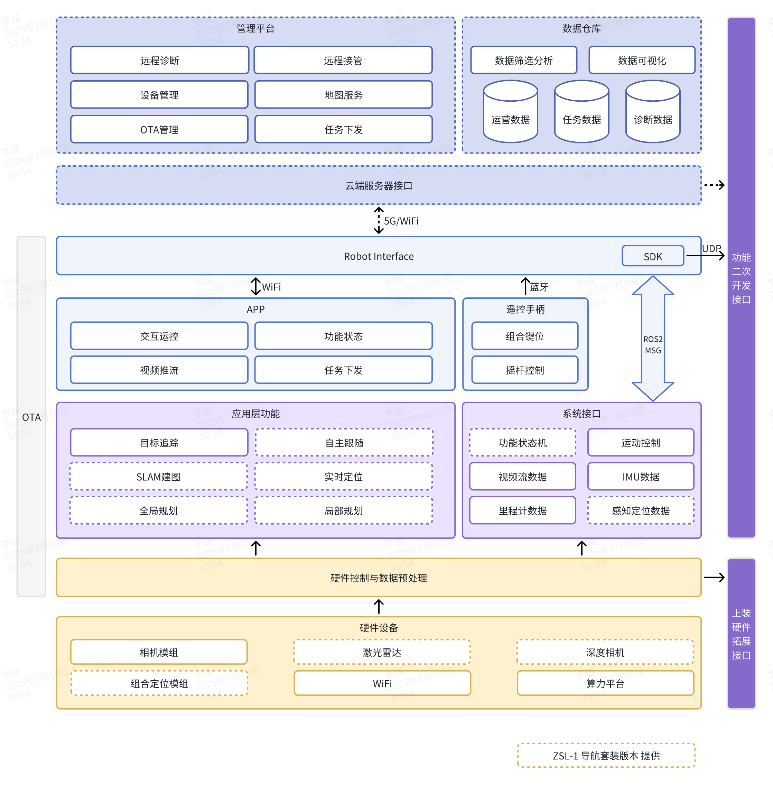
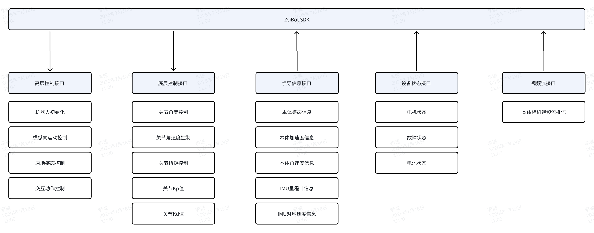
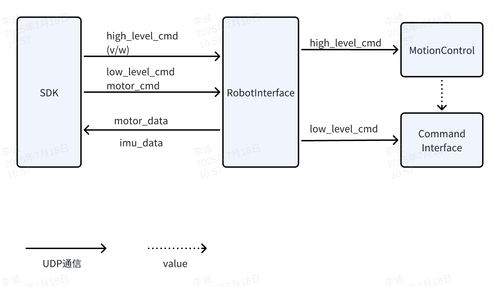
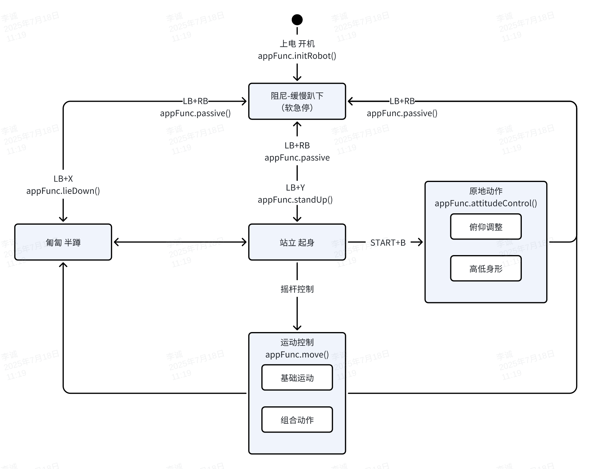
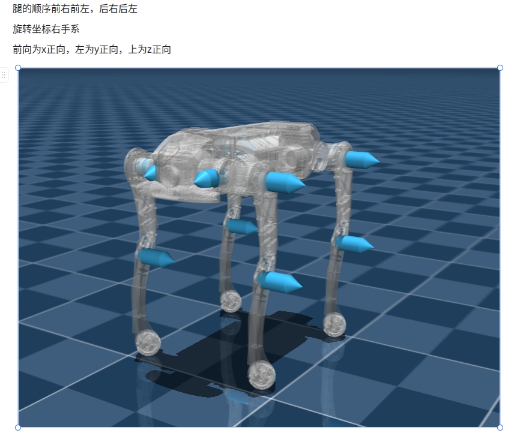

ZsiBot SDK 系统架构
SDK目录结构
├── demo
│ ├── zsl-1
│ │ ├── cpp # cpp示例
│ │ └── python # python示例
│ └── zsm-1w
├── include
│ ├── zsl-1
│ │ ├── highlevel.h # 高级控制头文件
│ │ └── lowlevel.h # 低级控制头文件
│ └── zsm-1w
│ └── highlevel.h
└── lib
├── zsl-1
│ ├── aarch64
│ │ ├── libmc_sdk_zsl_1_aarch64.so # C++控制so包
│ │ └── mc_sdk_zsl_1_py.cpython-310-aarch64-linux-gnu.so # python控制so包
│ └── x86_64
│ ├── libmc_sdk_zsl_1_x86_64.so
│ └── mc_sdk_zsl_1_py.cpython-310-x86_64-linux-gnu.so
└── zsm-1w
├── aarch64
│ ├── libmc_sdk_zsm_1w_aarch64.so
│ └── mc_sdk_zsm_1w_py.cpython-310-aarch64-linux-gnu.so
└── x86_64
├── libmc_sdk_zsm_1w_x86_64.so
└── mc_sdk_zsm_1w_py.cpython-310-x86_64-linux-gnu.so
ZsiBot 系统架构

SDK软件框图
当前已开放运动控制相关SDK接口, 包括高层运动控制接口、底层电机控制接口、IMU 惯导数据接口、电机状态数据接口

SDK软件接口

运动控制状态机
指令下发需要按照以下状态跳转逻辑, 否则可能会造成机器摔倒/故障/不响应

关节控制命令说明
📌 命令顺序
- FR（右前）
- FL（左前）
- RR（右后）
- RL（左后）
🔄 关节方向定义
A,H,K关节坐标系 前X， 左Y， 上Z 
🔧 控制参数
关节角度指令
float q_des_abad[4] // A 关节角度指令
float q_des_hip[4] // H 关节角度指令
float q_des_knee[4] // K 关节角度指令
关节角速度指令
float qd_des_abad[4] // A 关节角速度指令
float qd_des_hip[4] // H 关节角速度指令
float qd_des_knee[4] // K 关节角速度指令
关节 PID 参数
float kp_abad[4] // A 关节 Kp
float kp_hip[4] // H 关节 Kp
float kp_knee[4] // K 关节 Kp
float kd_abad[4] // A 关节 Kd
float kd_hip[4] // H 关节 Kd
float kd_knee[4] // K 关节 Kd
关节扭矩指令
float tau_abad_ff[4] // A 关节扭矩指令
float tau_hip_ff[4] // H 关节扭矩指令
float tau_knee_ff[4] // K 关节扭矩指令